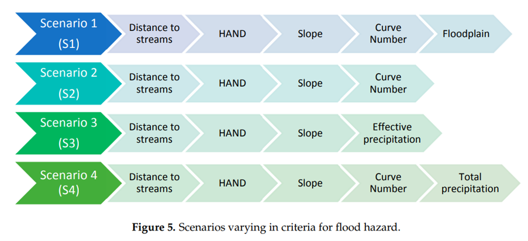
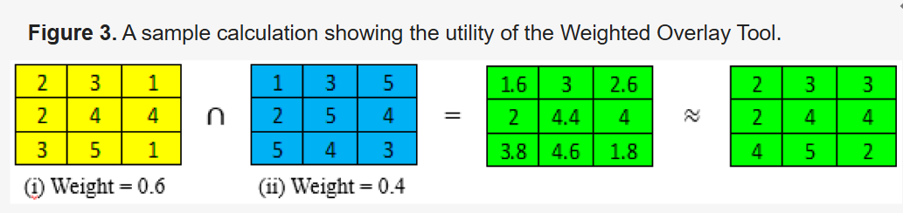
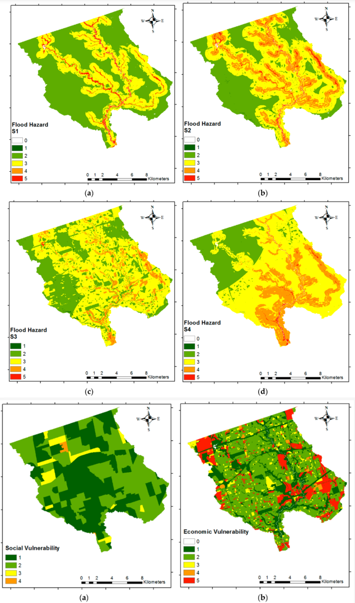

What is Multicriteria Analysis?
Multicriteria analysis (MCA) is used a lot with GIS to help decision making. But what actually is it? MCA is a decision-making tool which helps evaluate multiple variable, that are not related or conflicting, by providing them with a score from a specific criteria (Malczewski, 2018). It is a way to provide information about human preferences and the importance of each variables (Malczewski, 2018). To evaluate these variables during the analysis one normally uses a decision matrix, as shown below (Malczewski, 2018).

MCA is valuable in GIS because it provides information about priorities or weight of variables to locations (Malczewski, 2018). By using both GIS, the spatial patterns, and MCA we can find a way to combine geographic data with human preferences which can lead to better decisions making (Malczewski, 2018).
MCA is also valuable because it helps to answer multiple questions. For example it can answer to following questions:
- Where are the most suitable locations for a new development?
- Where should conservation efforts be prioritized?
- Which areas are most vulnerable to climate impacts?
- Where should nature-based solutions be implemented?
- Which locations balance environmental and social needs?
Analysis of Research Paper
For this project as mentioned above I am going to look at a research paper a see how they have used multicriteria analysis for decision making. The research paper I am going to focus on is ‘Flood Risk Mapping Using GIS and Multi-Criteria Analysis: A Greater Toronto Area Case Study’.
In this research paper, it address both a social and environmental problem, which is the flooding risk in Greater Toronto Area (Rincón et al., 2018). Through doing this research paper it could help with flood mitigation in urban areas (Rincón et al., 2018). It does this by looking at how similar the GIS and multicriteria analysis is to the official flood plain map and which areas should be focused on (Rincón et al., 2018). The map below shows the study area they were looking at.

In this research paper, they made different criteria for four scenarios (Rincón et al., 2018). This first scenario, which was the most accurate had the following criteria: distance to streams, height above nearest drainage, slope, the curve number and the floodplain (Rincón et al., 2018). The second scenario only considered distance to streams, height above nearest drainage and the curve number (Rincón et al., 2018). The thirds scenario effective precipitation, distance to stream, height above nearest drainage, and slope (Rincón et al., 2018). Finally, the fourth scenario considered total precipitation, distance to streams, height above nearest drainage, slop, and curve number (Rincón et al., 2018). This can clearly be shown in the figure below. This research paper also included a social and economic vulnerability as criteria (Rincón et al., 2018). This was to help determine the total flood vulnerability in the watershed under three scenarios (Rincón et al., 2018). The first scenario was given a higher importance to the social vulnerability (Rincón et al., 2018). The second scenario was given equal importance to both social and economic vulnerability (Rincón et al., 2018). Finally, the third scenario was given more importance to the economic vulnerability (Rincón et al., 2018).
These criteria were important because it allows urban planner to determine which areas are the most at risk by taking into account a variety of different social variables.

The create their maps on GIS they used multiple data sources. They used a digital elevation model (DEM) map with a ground resolution of 5 m × 5 m, a soil type map, the Don River watershed boundary map, the greater Toronto area boundary map, a land-use map, and a streams map (Rincón et al., 2018). In addition, precipitation data from rainfall gauges was also used (Rincón et al., 2018). The precipitation data was provided by the TRCA and also a floodplain map (Rincón et al., 2018). The researchers also include the census data from 2016 from Statistics Canada, along with the census tract boundaries (Rincón et al., 2018).
To combine the criteria for their analysis they used an AHP method, Analytical Hierarchy Process (Rincón et al., 2018). This was used as a way to weigh the different criteria in the context of MCDM. After they combined the criteria, they reclassified them to 1-5 scale (Rincón et al., 2018). Then in ArcMap, using the Weigthed Overlay Tool, they carried out a spatial overlay of all the criterion maps (Rincón et al., 2018). Finally, to achieve the output raster cells they multiplied the criterion values with their weighted value and then summed them (Rincón et al., 2018).
They, also, had to conduct some calculations to find some of the criteria (Rincón et al., 2018). For the slope criteria it was derived from the DEM (Rincón et al., 2018). The height above nearest drainage was also derived from the DEM but also the streams layer (Rincón et al., 2018). In addition, the distance to streams was calculated using the Euclidean distance tool (Rincón et al., 2018).

The results from this research paper found that scenario 2 was the closest to the official TRAC floodplain map (Rincón et al., 2018). It also found that including the social and economic vulnerabilities gravely affected the data from the map (Rincón et al., 2018). By including the criteria precipitation to both scenario 3 and 4, it changed the hazard patterns on the maps (Rincón et al., 2018). However it did make them less similar to scenario 1 (Rincón et al., 2018). Finally, the results showed that when using V3 scenario, the one which has economic vulnerability as highest, it shifted the hazard risk area to the industrial and commercial zones (Rincón et al., 2018).
The use of MCA allowed there to be multiple scenarios to be compared and analysed. It also allowed water resource planers to know which areas to focus more detailed assessment of flood risk (Rincón et al., 2018).

Bibliography
Malczewski, J. (2018). Multicriteria Analysis. Comprehensive Geographic Information Systems, 197–217. https://doi.org/10.1016/b978-0-12-409548-9.09698-6
Rincón, D., Khan, U., & Armenakis, C. (2018). Flood Risk Mapping Using GIS and Multi-Criteria Analysis: A Greater Toronto Area Case Study. Geosciences, 8(8), 275. https://doi.org/10.3390/geosciences8080275
Reflection
Doing this project has allowed me to truly understand what multicriteria analysis and what process goes into completing it. It also highlighted its importance because by just changing the criteria it can have drastic impacts on the map you produce. I found it very interesting to analysis the research paper and how it was used to determine flood risk. In the future, I would like to attempt to use it for one of my maps.